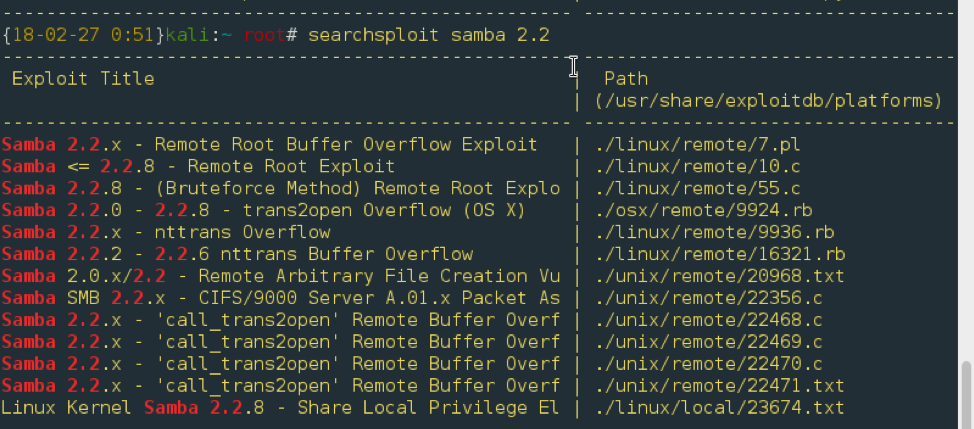
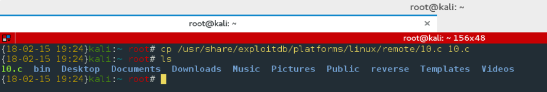

Phase 1 Recon: Collecting information about the target
Get our IP by using ifconfig, and then use nmap to scan the range of possible IP's.
We can see now that the target IP is: 192.168.232.133
Phase 2 Scanning: Discover OS, open ports, and running services
Now we can use nmap to scan the open ports on our target. Sometimes the -A tool can produce an overwhelming amount of results, but because there are only 6 ports open on the target machine we can use it to gather a large amount of information quickly.
Here we see the open ports, the services that they are running, and the operating system. We know the:
- Open Ports
- Port 22: Secure Shell for remote access to the terminal
- Port 80: Standard port used for web servers, this one is running an Apache web server v. 1.3.20
- Port 111: Used for rpcbind, a utility that maps remote procedure calls(RPCs) to their corresponding addresses onthe server in order to carry out function calls.
- Port 139: This port is being used to run a file/printer sharing service called Samba.
- Port 443: This is another port serving a webpage with the same informationas port 80
- Operating System
- We see that the machine is running a version of Linux 2.4.x. From what we gathered from the ports serving webpages, it's likely that this machine is running a version of Red Hat Linux.
Phase 3 Enumeration: Another way of gathering info.
A more active way of gathering information, is by connecting to potentially more vunerable ports in order to gain more data about the machine
- Port 80: HTTP/Web
Let's start with visiting the webpage.

Most of the links didn't work, leading to Page Not Found errors. These pages that do work seemed to mostly contain documentation about the Apache web server. For good measure lets run Dirb.
We can see that Dirb was not able to reach the links with sensitive information.
- Port 139: Samba server
Samba is a service for file and printer sharing between Linux and Windows machines, using the SMB/CIFS protocol. In this case Samba is running over the NetBIOS API, programs for communication between computers, because this is a Linux machine. If this were setup for communication between two Windows machines we would not need NetBIOS and Samba would run on port 445. This is the reason why our initial scan showed it as netbios-ssn (netbios session).We can use smbclient, which is very similar to ftp, to test connectivity to the server.
Now that we know the version of Samba that is running, we can use a tool called Searchsploit to check if there is an existing vulnerability. Searchsploit searches Exploit-DB,a comprehensive archive of pubblic exploits, on the keywords present in the expression. E.g.) samba version 2.2. Searchsploit operates on an AND operator, this means it will ALWAYS filter more results. Use grep to filter the output for OR expressions.
The second search result looks to be what we are looking for. It is Samba Remote Root Exploit that works on versions up to 2.2.8. The target server is using version 2.2.1 so it's safe to assume this will work on the server. The second column contains the rest of the path to the exploit: ./linux/remote/10.c. From this path we can see that the exploit works for linuxand is executed remotely. Once we choose an exploit, we can copy it to our root folder by using cp and appending the path from the exploit to the path that is listed at the top of the second column.
Phase 4: Gaining Access: Getting credentials to gain ownership.
Now that the exploit is in our root folder we can use any text editor to open the file and view the program, Gedit is used in this example.
The second command at the bottom is what tells us how to run this for Linux. Now we are ready to compile and run the exploit.
By typing in the command whoami we can see that we have root privileges in the Samba server. We have successfully connected to the Samba server, but because we are in a Samba shell, we are not able to use the full range of commands that are typically on a Linux machine. This means that we should set up a reverse shell, in which the target connects back to our attack box, to more easily navigate through the system and get a full range of capabilities. We can do this by setting up a listener on our attack box by using netcat. Netcat is not installed on the target box, but we can connect back to our attack box using a bash script.
As a final step, lets add a user to the system to establish persistence, in case the Samba vulnerability gets patched, and we are unable to use our exploit to get in. Useradd can usually be ran directly from the command line but in this case we cannot, probably because the directory is not in the root user's path. Therefore, we can execute the command using the full path of the binary. Lets try to create a super user, using the -ou flag to set our user id and -g to set our group id as 0 (root), named testing followed by the passwd command to set the password to shhh.

Now we can login to the machine whether the Samba server gets patched or not.